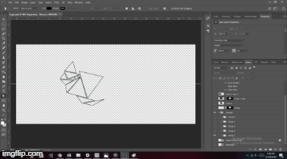
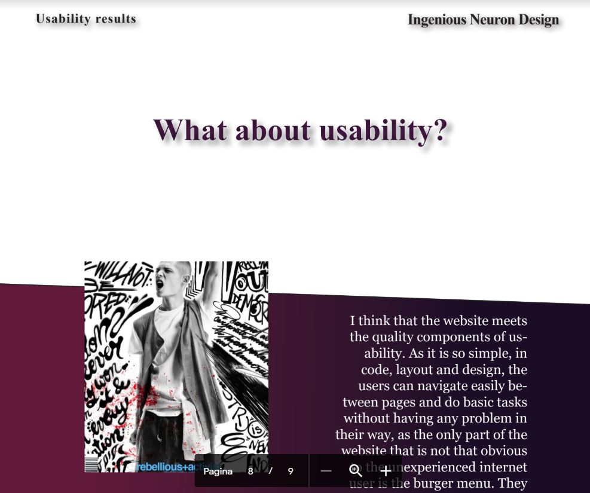

The logo
In the first theme we were introduced to Photoshop and Illustrator things which I have used in my advantage to create the logo. This is a key element for every website owner which must be very suggestive to be able to transmit the identity of that particular company, or in my case myself. This is the reason why I have stepped out from the doodle style and went for a more Deconstructivism type of art.
01.03.01 Design and Process PDF
In this document I have learned how to analyze the Gestalt principles applied in my own design of my own website, thing which I believe is crucial because you have 7 seconds to grab the attention of the visitor of your website so you must make it as aesthetically pleasing as possible with of course, a lot of interaction added to it.
